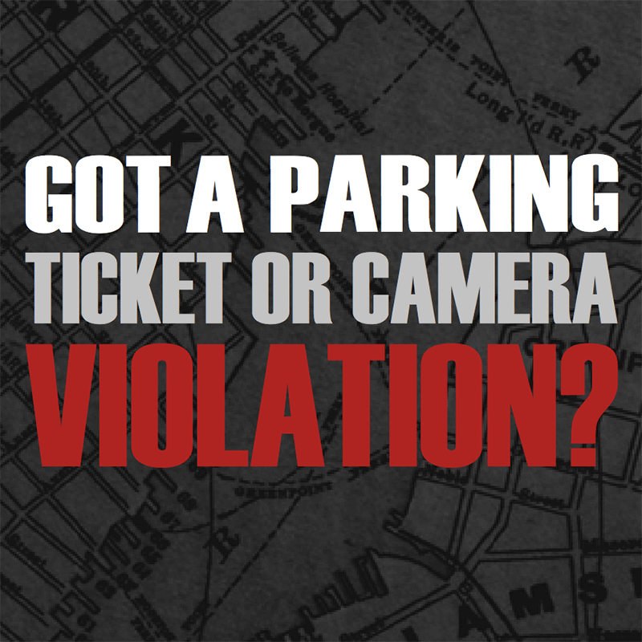

Appeal Process
https://www.chicago.gov/city/en/depts/fin/supp_info/revenue/challenging_tickets/contesting_in_person.html
As a registered owner of a vehicle, you have the right to contest the issuance of a parking, compliance, automated traffic law enforcement (i.e. red light) or automated speed camera enforcement violation.
You have seven (7) days from the date of issuance of a parking or compliance violation to contest the ticket. If neither a contest or payment is received, a second Notice of Violation is mailed allowing twenty-one (21) days to request a hearing.
You have twenty-one (21) days from the Notice of Violation date to contest the issuance of an automated traffic law enforcement (i.e. red light) or automated speed camera enforcement violation.

If no response to the Notice of Violation is received, a Notice of Determination is mailed as notification that you have been found liable by default and have the option to petition to set aside the default judgment by appearing in person within twenty-one (21) days of the date of the Determination. Once the twenty-one (21) days have lapsed, your opportunity to contest has expired. After twenty-five (25) days a Notice of Final Determination is mailed informing you that your options to challenge the ticket, both administratively and judicially, have been forfeited. A penalty equal to the amount of the fine will be assessed at that time.
The Municipal Code of Chicago allows the following defenses for parking and compliance tickets. If you received a violation issued by an automated camera, and received a mailed notice with images of a vehicle registered in your name, please see the applicable defenses for Red Light and Bus Stop or Bus Lane violations.
The following defenses are allowed for most parking and compliance tickets:
- The respondent was not the owner or lessee of the cited vehicle at the time of the violation;
- The cited vehicle or its state registration plates (license plates) were stolen at the time of the violation;
- The relevant signs prohibiting or restricting parking were missing or obscured;
- The relevant parking meter was inoperable or malfunctioned through no fault of the respondent;
- The facts alleged in the parking or compliance violation notice are inconsistent or do not support a finding that the specified regulation was violated (e.g., motorists may contest a city sticker violation if they have resided in Chicago for less than 30 days or the cited vehicle was purchased in the last 30 days; tinted windows comply with the medical use requirement of 625 ILCS 5/12-503(g); the residential parking permit was issued to a delivery, service, or repair vehicle or home health care provider doing business with or assisting a resident of the zone; etc.);
- The illegal vehicle condition did not exist at the time of the compliance violation;
- The compliance violation has been corrected prior to adjudication of the charge; provided, however, that this defense shall not be applicable to compliance violations involving display of the City wheel tax license emblem (vehicle or City sticker) under Section 9-64-125; to compliance violations involving motor vehicle exhaust systems under subsection (a)(2) of Section 9-76-140; to compliance violations involving registration plates under subsection (a) of Section 9-76-160; to compliance violations involving display of registration plates, temporary registration or temporary permits under subsection (f) of Section 9-76-160; or to compliance violations relating to glass coverings or coating under Section 9-76-220.
The following defenses are allowed for Red Light Violations recorded by automated cameras; violations issued pursuant to 9-102-020 of the Municipal Code of Chicago. You should have received a notice by postal mail displaying three (3) images of a vehicle registered in your name, including a close-up image of the vehicle's license plate:
- The operator was also issued a uniform traffic citation for a violation of sections 9-8-020(c) or 9-16-030(c) (for purposes of red light camera violations issued pursuant to section 9-102-020 only);
- That the violation occurred when the vehicle or its state registration plates (license plates) were reported to a law enforcement agency as having been stolen, and the vehicle or its plates had not been recovered by the owner at the time of the alleged violation;
- The vehicle was an authorized emergency vehicle or was lawfully participating in a funeral procession;
- That the facts alleged in the violation notice are inconsistent or do not support a finding that the Chicago Municipal code was violated;
- The respondent was not the owner of the cited vehicle at the time of the violation.
The following defenses are allowed for Automated Speed Enforcement Violations recorded by automated cameras; violations issued pursuant to 9-101-020 or 9-102-020 of the Municipal Code of Chicago. You should have received a notice by postal mail displaying three (3) images of a vehicle registered in your name, including a close-up image of the vehicle's license plate:
- The operator of the vehicle was issued a Uniform Traffic Citation for a speeding violation occurring within one-eighth of a mile and 15 minutes of the violation that was recorded by the system;
- The facts alleged in the violation notice are inconsistent or do not support a finding that Section 9-12-070, 9-12-075, or 9-12-077 was violated;
- The violation occurred at any time during which the vehicle or its state registration plates (license plates) were reported to a law enforcement agency as having been stolen and the vehicle or its plates had not been recovered by the owner at the time of the alleged violation;
- The vehicle was leased to another and the lessor has provided the name and address of the lessee within 30 days of being notified, in compliance with Section 9-100-140(c);
- The vehicle was an authorized emergency vehicle; or
- The respondent was not the registered owner or lessee of the cited vehicle at the time of the violation.
The following defenses are allowed for Bus Stop or Bus Lane Violations recorded by automated cameras; violations issued pursuant to 9-103-020(a) of the Municipal Code of Chicago for violating sections 9-12-060(b) or 9-64-140(b). You should have received a notice by postal mail with images of a vehicle registered in your name, including a close-up image of your vehicle's license plate:
- The operator of the vehicle was issued a uniform traffic citation for a violation of 9-12-060(b) or a parking violation for 9-64-140(b);
- The violation occurred at any time during which the vehicle or its license plate was reported to a law enforcement agency as having been stolen and the vehicle or its license plate had not been recovered by the owner at the time of the alleged violation;
- The vehicle was leased to another, and within sixty (60) calendar days after the citation was mailed to the owner, the owner submitted to the City of Chicago Department of Finance the correct name and address of the lessee of the vehicle identified on the citation at the time of the violation, together with a copy of the lease agreement, and any additional information as may be required by the Department;
- The vehicle was an authorized emergency vehicle;
- The facts alleged in the violation notice are inconsistent or do not support a finding that Section 9-12-060(b) or Section 9-64-140(b) was violated;
- The respondent was not the registered owner or lessee of the cited vehicle at the time of the violation;
- The vehicle was making a right hand turn;
- The vehicle, if not a taxicab, was stopped to expeditiously load or unload passengers, and the vehicle did not interfere with any bus waiting to enter or about to enter the bus lane;
- The vehicle, if a licensed taxicab, was stopped to expeditiously load or unload passengers.
You can request an in-person hearing by calling the City of Chicago's Ticket Helpline @ 312.744.PARK (7275); 312.744.7277 (TTY - Hearing Impaired).
You can request an in-person hearing by mail. Fill the request for in-person hearing bubble on the ticket envelope or return the envelope provided with the mailed Notice of Violation. If responding from the mailed Notice of Violation, please fill the in-person hearing bubble both on the stub of the Notice of Violation and the envelope provided.
You may also request an in-person hearing through the City’s website. Click on the link Submitting a Hearing Request via the City’s Website and follow the instructions to request an in-person hearing.
A notice will be mailed to you noting the begin date of the week you can appear at any of the City of Chicago's hearing facilities during the hours noted below. You can choose which day of your scheduled week is most convenient for you to appear. However, hearing locations are closed on legal City holidays. Bring to the hearing any evidence you wish to be considered, including, but not limited to: police reports, registration documents, receipts, and pictures.